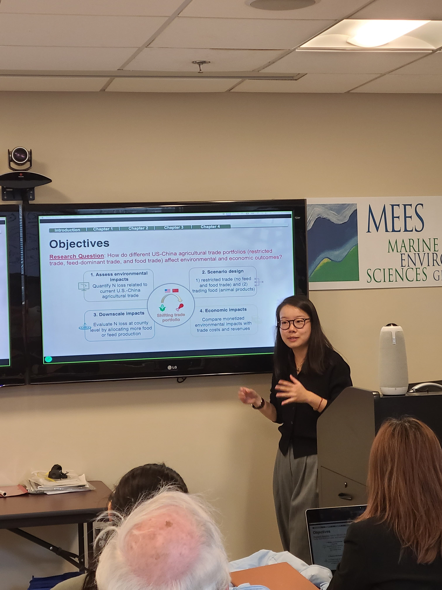
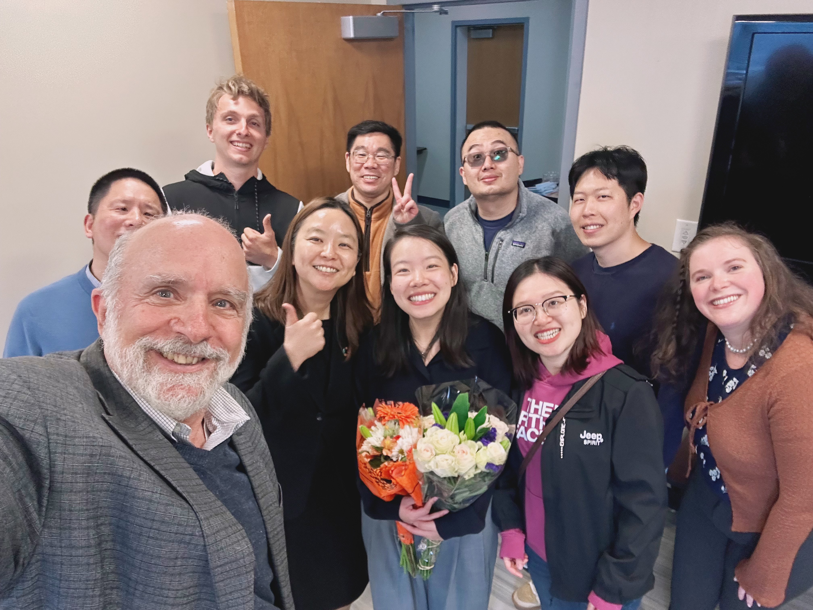

May 2026
Ph.D. Defense & Graduation
University of Maryland Center for Environmental Science
In May 2026, I successfully defended my Ph.D. dissertation and officially graduated with a Ph.D. in Marine Estuarine Environmental Sciences.
I am deeply grateful to my advisors, committee members, collaborators, lab members, family, and friends for their mentorship and support throughout this journey.
This milestone marks the end of an exciting chapter and the beginning of my next chapter as a Postdoctoral Fellow at Georgetown University Earth Commons.

Photo by Stefan A. Photography

With advisor, committee member, and president at the graduation ceremony.
Photo by Stefan A. Photography

During my Ph.D. defense presentation.

Celebrating with lab members and advisors.